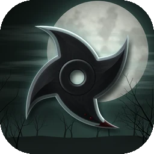

Un trazo, un shuriken
Como cortar fruta, pero contra zombis. A la derecha, botones para el lanzamiento recto y el golpe cuerpo a cuerpo.

Un ninja, la noche y un ejército de zombis. Cada trazo lanza un shuriken.
El mundo ha caído. De noche los zombis salen del bosque, y tú eres un ninja con los bolsillos llenos de shurikens. Entonces, una señal en la radio: en algún lugar todavía quedan supervivientes.
The Last Shuriken es un juego de acción en primera persona: mueve al ninja con el joystick y lanza con el dedo, un trazo por cada shuriken. El juego está en desarrollo: las imágenes proceden de versiones de prueba y pueden cambiar.
Como cortar fruta, pero contra zombis. A la derecha, botones para el lanzamiento recto y el golpe cuerpo a cuerpo.
Katana, motosierra, kunais explosivos, un arco con flechas de fuego, shurikens eléctricos, un lanzallamas, nunchakus y más. Recógelas y úsalas hasta que se agoten.
Y un supermercado lleno de sorpresas. Oleadas cada vez más duras y un jefe al final de cada tercera oleada.
¿Un problema, una compra que restaurar o una idea para un juego? Escríbenos: respondemos en inglés y en italiano.
EscríbenosLa política de privacidad se publicará junto con el juego.